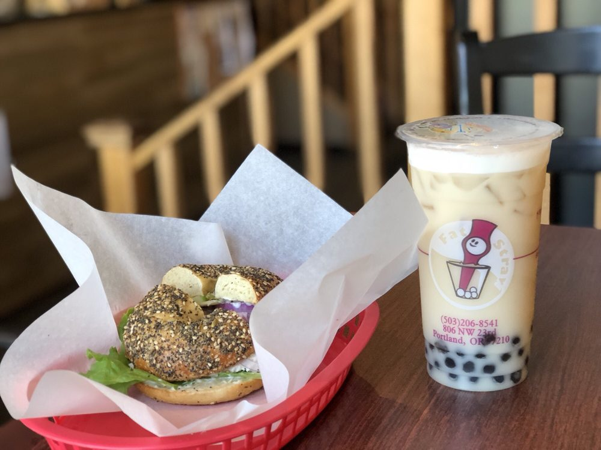

Bubble Tea
Here at Fat Straw, our signature drinks are concocted using only the highest quality ingredients we could find. We could use lower grade, less expensive products, but to ensure the most authentic, flavorful, and distinct taste; we import all these ingredients and our bubble-tea-exclusive machinery straight from Taiwan: birthplace and bubble tea mecca of the world. All of our bubble teas (aside from the decaffeinated Taro milk tea) contain fresh, daily brewed, top quality tea.